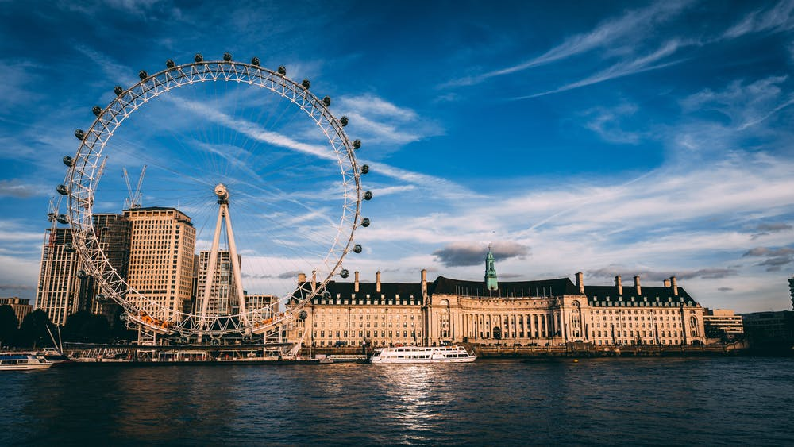
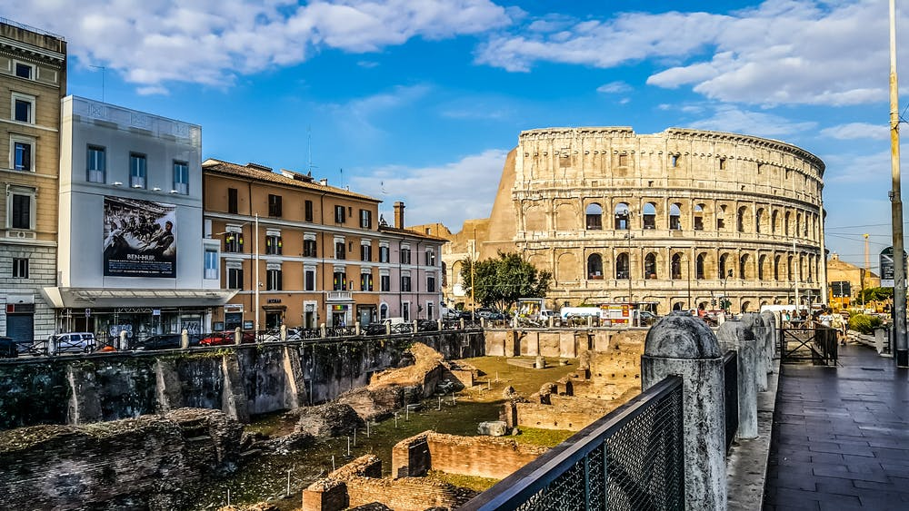
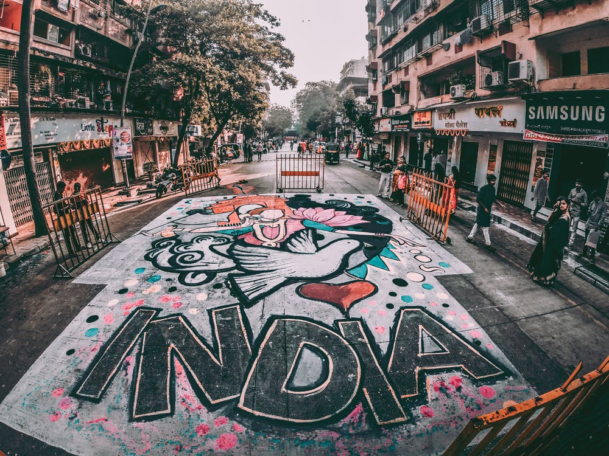

Travel

As of 2020, Rome is ranked as an Alpha global city by the Globalization and World Cities Research Network.[13] In 2019, Rome was the 11th most visited city in the world with 10,1 millions of tourists, third most visited in the European Union, and the most popular tourist destination in Italy.[14] Its historic centre is listed by UNESCO as a World Heritage Site.[15] Host city for the 1960 Summer Olympics, Rome is also the seat of several specialised agencies of the United Nations.
Ankush

The Statue of Liberty (Liberty Enlightening the World; French: La Liberté éclairant le monde) is a colossal neoclassical sculpture on Liberty Island in New York Harbor in New York, in the United States. The copper statue, a gift from the people of France to the people of the United States, was designed by French sculptor Frédéric Auguste Bartholdi and its metal framework was built by Gustave Eiffel. The statue was dedicated on October 28, 1886.
Chandu

London is the capital and largest city of England and the United Kingdom.[7][8] Standing on the River Thames in the south-east of England, at the head of its 50-mile (80 km) estuary leading to the North Sea, London has been a major settlement for two millennia. Londinium was founded by the Romans.[9] The City of London, London's ancient core − an area of just 1.12 square miles (2.9 km2) and colloquially known as the Square Mile − retains boundaries that closely follow its medieval limits.[10][11][12][13][14][note 1] The City of Westminster is also an Inner London .
Ankit

Due to its central geographic location in Southern Europe and the Mediterranean, Italy has historically been home to myriad peoples and cultures. In addition to the various ancient peoples dispersed throughout what is now modern-day Italy, the most predominant being the Indo-European Italic peoples who gave the peninsula its name, beginning from the classical era, Phoenicians and Carthaginians founded colonies mostly in insular Italy,[18] Greeks established settlements in the so-called Magna Graecia of Southern Italy, while Etruscans and Celts inhabited central and northern Italy
Ankan

India (Hindi: Bhārat), officially the Republic of India (Hindi: Bhārat Gaṇarājya),[20] is a country in South Asia. It is the second-most populous country, the seventh-largest country by area, and the most populous democracy in the world. Bounded by the Indian Ocean on the south, the Arabian Sea on the southwest, and the Bay of Bengal on the southeast, it shares land borders with Pakistan to the west;[e] China, Nepal, and Bhutan to the north; and Bangladesh and Myanmar to the east. In the Indian Ocean, India is in the vicinity of Sri Lanka and the Maldives.
Binayak